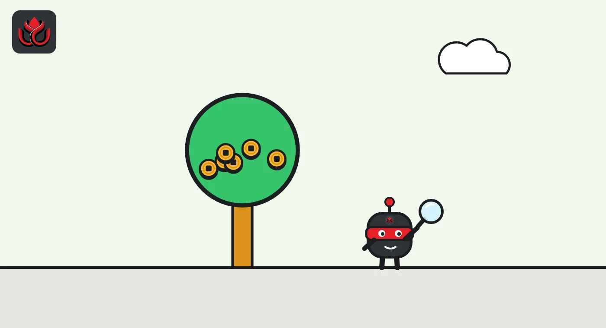
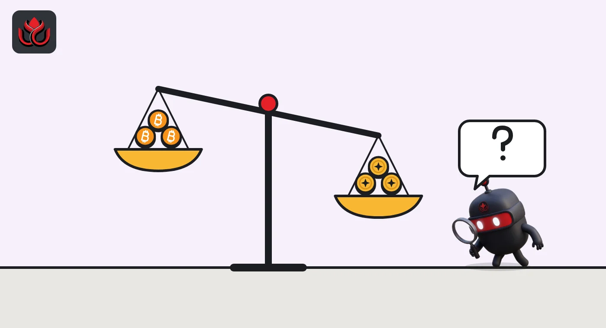

What is proof of reserves? What it proves about exchanges, and what it misses
Proof of reserves is a public check that an exchange holds at least as much crypto as its customers have deposited. Merkle trees or zero-knowledge proofs let you confirm your balance was counted, but it is a one-day snapshot, not proof the company is solvent.
Key points
- Proof of reserves (PoR) compares the crypto in an exchange's wallets with the crypto its customers hold on the exchange.
- A Merkle tree lets each user confirm their own balance was included without everyone's balances being made public.
- Binance and OKX both started publishing PoR in November 2022 and later added zero-knowledge proofs.
- PoR is a snapshot of one moment. It does not show loans, other debts or how the company is run.
 What DeepSea's data shows
What DeepSea's data shows
Outside trackers can watch exchange wallets, but only the ones they can label. DeepSea's exchange list showed Binance's tracked wallets at $144.40 billion and OKX's at $7.91 billion on November 2. OKX's own proof of reserves report, covered above, counts far more, which shows how much a label-based view can miss.
Flows add a time dimension that a monthly report lacks. Over seven days, DeepSea shows net outflows of $1.55 billion from Binance's tracked wallets and $244.07 million from OKX's. A reserve report proves holdings at one moment; flow data shows how they move in between.

Data: DeepSea (desea.io), checked November 2, 2026, 7:55 a.m. ET.
What is proof of reserves?
Proof of reserves is a way for a crypto exchange to show, in public, that it holds the coins its customers think they own. It has two halves. The first is the assets: the exchange lists the blockchain wallets it controls, and anyone can see their balances. The second is the liabilities: the total of all customer balances on the exchange, per coin.
Divide the first by the second and you get a reserve ratio. On its PoR page, OKX says a reserve is confirmed when on-chain holdings equal or exceed customer account assets.
Big exchanges began publishing these reports in late 2022. Binance says its system went live in November 2022, at first covering only bitcoin. OKX says its series also began in November 2022, and by October 30, 2026, it had published 48 consecutive monthly reports.
How does a Merkle tree prove my balance is included?
A Merkle tree is a way to fold a huge list into one short fingerprint. Each customer's entry (an anonymized ID plus their balance) is turned into a hash, a short code that changes completely if the input changes by even one digit. Pairs of hashes are combined and hashed again, level by level, until one hash is left at the top: the Merkle root.
The exchange publishes the root. You receive the small set of hashes that link your own entry to that root, called a Merkle proof. If you can rebuild the root from your entry and the proof, your balance was counted in the total. Binance describes its original system as encoding user IDs with their net holdings per token into such a tree, and offers a step-by-step page where users download their Merkle tree data and run an open-source verifier. Binance notes the report "is a snapshot and not a display of real-time assets."
You learn only about your own entry. No one sees anyone else's balance.

Why did exchanges add zero-knowledge proofs?
A plain Merkle tree has a weak spot. Binance has said a conventional tree could be distorted with fake accounts holding negative balances, which would shrink the total the exchange appears to owe.
Zero-knowledge proofs fix that. They let a company prove a statement is true without revealing the data behind it. Binance added zk-SNARK proofs in February 2023. OKX added zk-STARK proofs to its Merkle tree checks in 2023, and its PoR page says the proof covers three rules: the total equals the sum of all accounts, no account is negative, and every account is included.
The trade-off is complexity. A Merkle proof can be checked with simple tools, while zero-knowledge proofs need the exchange's verifier software.
What does a reserve ratio of 108% mean?
It means the exchange holds 108 coins for every 100 coins customers have on it. In OKX's 49th report, posted in November 2026, the PoR page shows 169,755 BTC in OKX wallets against 156,609 BTC in customer accounts, a 108% ratio. Other ratios in that report: XRP 107%, USDT 106%, SOL 105%, ETH 101%, DOGE 101%, USDC 100% and OKB 100%.
Anything at 100% or above means the coins are there at that moment. A ratio below 100% for a coin means the exchange did not hold enough of that coin when the snapshot was taken.
OKX reserve ratios, 49th report (November 2026)
% of customer balances
Source: OKX Proof of Reserves, as shown November 2, 2026

Which exchanges publish proof of reserves, and how often?
The two largest examples publish monthly. Binance says it takes its user snapshot at 7:00 p.m. ET on the last day of each month (8:00 p.m. ET during daylight saving time) and releases the results by the 7th, according to its verification page. In late 2023 it said its system covered 31 assets, and it reported ratios of 104% for BTC, 105% for ETH, 111% for BNB and over 118% for USDT at that time.
OKX said on October 30, 2026, that its latest report covered more than $36 billion in on-chain assets across 22 cryptocurrencies. Its PoR page now shows the 49th report, with $27.8 billion in primary assets. Both exchanges publish the code for their proofs on GitHub, and OKX attaches a signed message to each wallet address so outsiders can confirm the wallets belong to it.
Not every exchange publishes reports, and the methods differ. That makes direct comparisons between exchanges hard.
What does proof of reserves not show?
- Debts outside customer balances. PoR compares crypto held with crypto owed to users. It does not list bank loans, legal claims or other liabilities, so it is not proof that the company is solvent.
- What happens after the snapshot. OKX notes that its report reflects balances at the time of capture and leaves out later transactions.
- Coins at custodians. OKX says balances held with third-party custodians are not verified through its own wallets.
- Security. PoR says nothing about how safe the wallets are. OKX's own post treats account protection as a separate matter.
Backing can also slip after a hack. Binance lost about $6.3 billion from hot wallets in October 2026 and then published reserve updates. On another network, a bug on the Liquid sidechain left a reserve short of bitcoin.
How is proof of reserves different from an audit?
A financial audit looks at a whole company: all assets, all debts, controls and records, signed off by an independent accounting firm. Proof of reserves is narrower and usually published by the exchange itself. Binance has called its own system "still a work in progress", and said a blockchain security firm found a vulnerability in the upgraded 2023 version, which Binance then fixed.
Regulators are starting to set standards for reserve reports. Dubai's VARA reviewed every 2025 report it received and is tightening the checks auditors must run.
How can I check an exchange's proof of reserves?
Most large exchanges have a PoR page. The usual steps: open the exchange's PoR page and find the latest snapshot date; look up your own entry or download your proof; run the exchange's open-source verifier, or rebuild the Merkle root yourself; and compare the published wallet list with what a block explorer shows. OKX describes these steps on its PoR page and publishes its tools on GitHub. Check the date first: an old snapshot says little about today.
LC Insight analysis
This section is our reading of the facts above, not a statement of fact.
- The reserve ratio is the easy part to read; the customer balance list is the hard part. A proof is only as good as the liabilities fed into it.
- The real gap is independence. Users can check self-published proofs, but a named auditor and fixed rules, like those Dubai's VARA is pushing, would make them much harder to game.
- After a big hack, fresh snapshots matter more than a high ratio in an old report.
What's next
- Whether more regulators require independent reserve attestations.
- How often exchanges publish snapshots after the October 2026 Binance theft.
- Moves to include liabilities beyond customer balances in reports.
Frequently asked questions
Does proof of reserves mean my funds are safe?
No. It shows the exchange held enough of a coin to match customer balances at one moment. It does not cover other debts, future losses or hacks.
How often do exchanges publish proof of reserves?
Monthly at the two largest examples. Binance says it takes its user snapshot at 7:00 p.m. ET on the last day of each month (8:00 p.m. ET during daylight saving time) and releases results by the 7th. OKX had released 48 monthly reports by October 30, 2026.
What is a Merkle root?
It is the single hash at the top of a Merkle tree that summarizes every customer entry. Changing any balance would change the root.
Why do some ratios sit exactly at 100%?
It means the exchange holds about as much of that coin as customers own, with little extra. In OKX's 49th report, published in November 2026, USDC and OKB were at 100%.
Disclaimer. This article is based on public information and the sources listed below as of the update time shown. It is for information only and is not investment, legal or tax advice. Figures may change as companies and authorities publish new data.